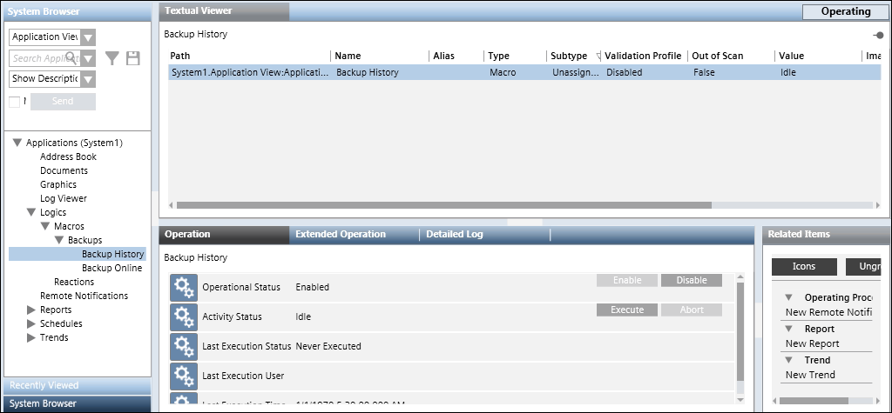

Manual HDB Backup Using a Macro
Scenario
You want to make a backup of the HDB database using the predefined system macro.
- In System Browser, select Application View.
- Select Applications > Logics > Macros > Backups > Backup History.
- Ensure that the macro is Enabled. If not, then enable the macro by clicking the Enable button.
- In the Operation tab, click Execute.
- The system begins backing up the HDB database. The default backup location is [installation drive:]\GMSBackups. Although the Last Execution Status indicates
Succeeded, it only means that the macro started successfully, it is not a confirmation that a backup was created successfully.
To ensure if the backup is created successfully, check the backup destination folder to verify the created [Project Name].bak file.
